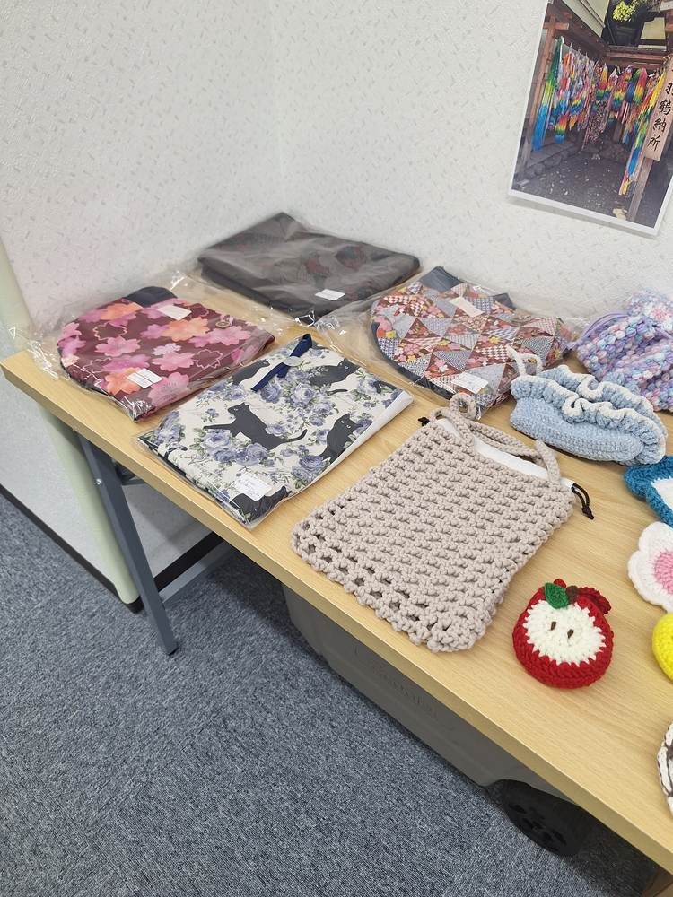
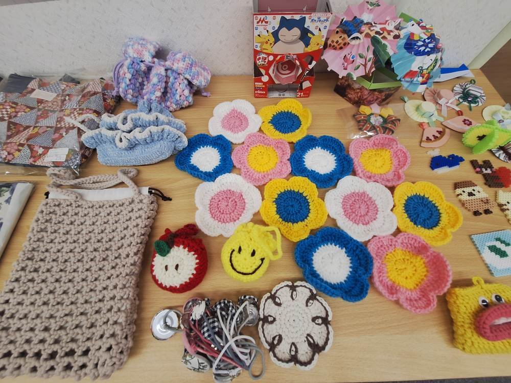
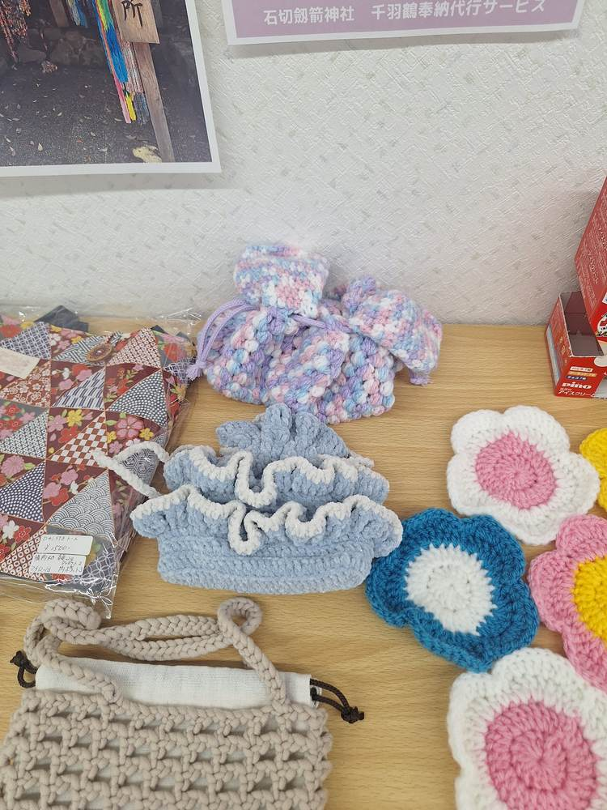
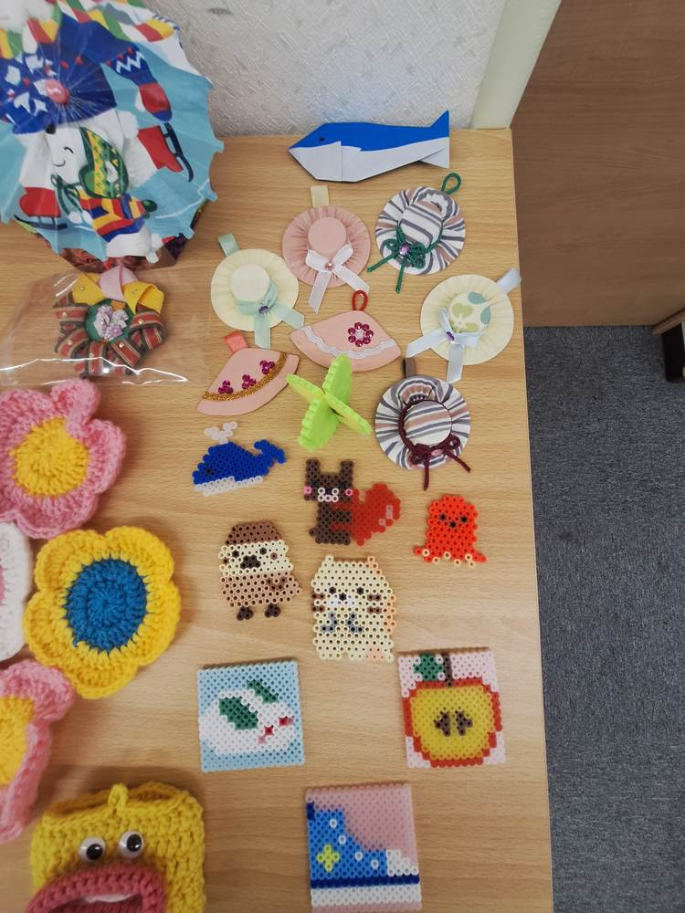
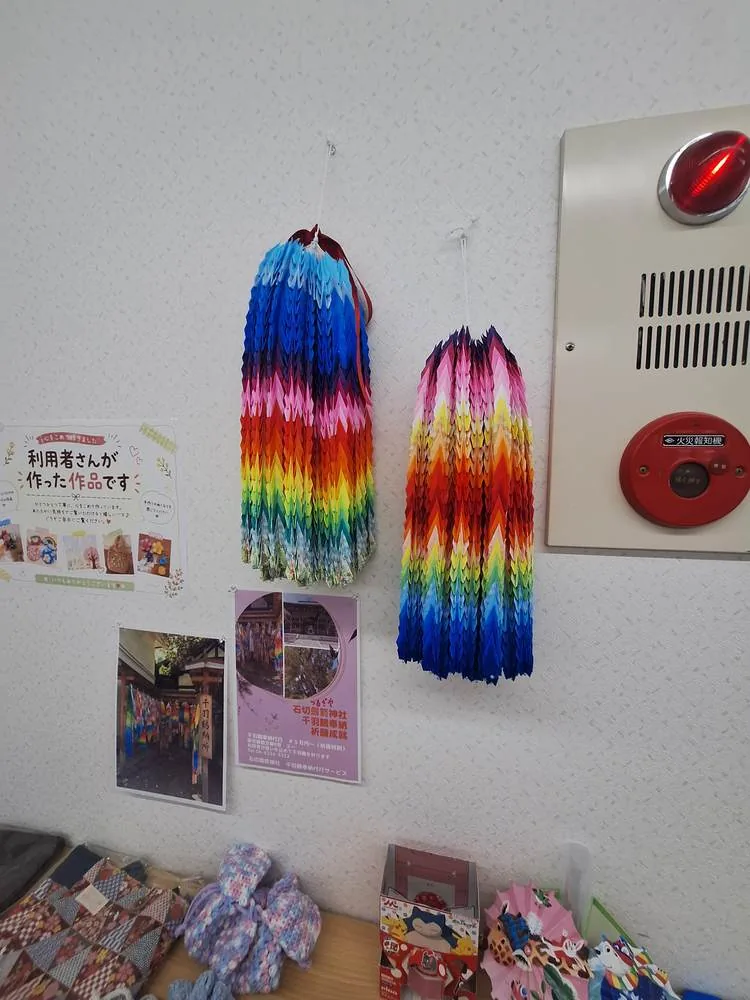
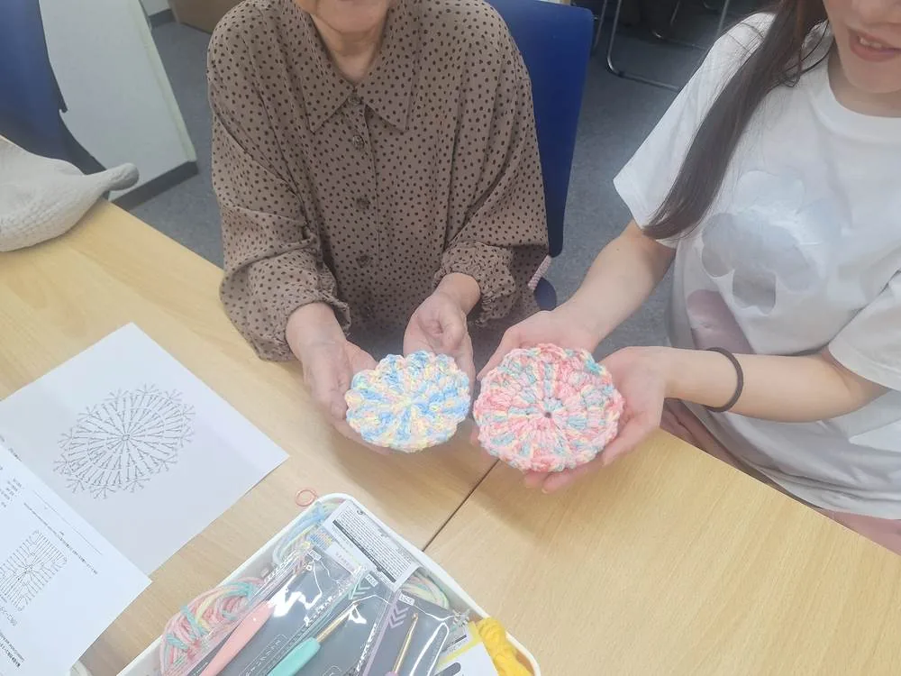
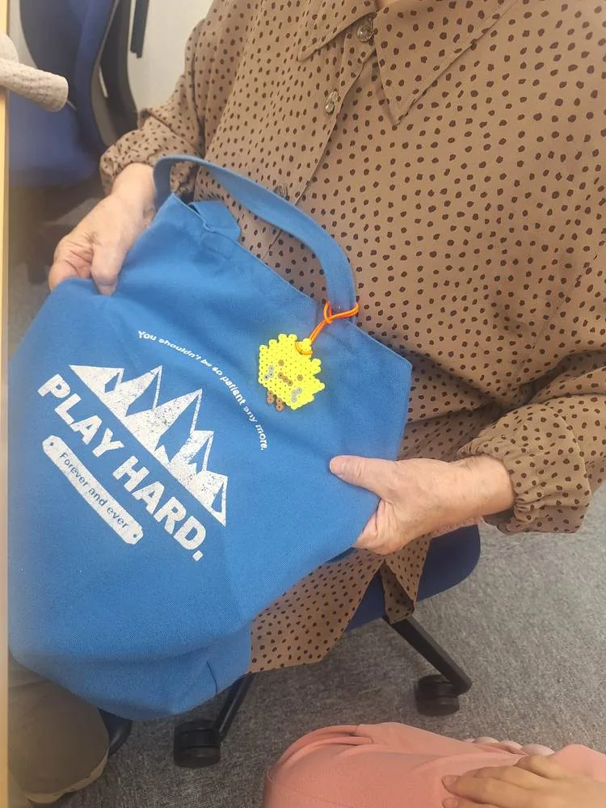
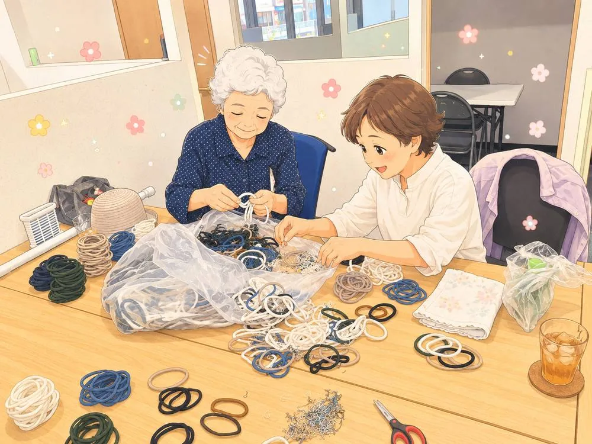

WORKS
作品紹介
利用者の皆さんが、一つひとつ心を込めて手作りした作品をご紹介します。

巾着・ポーチ
手作り巾着・ポーチ
和柄や花柄の布、編み込みのニット素材など、様々な巾着・ポーチを制作しています。

編み物
毛糸のお花モチーフ
色とりどりの毛糸で編んだお花のモチーフです。ブローチや飾りとしても人気です。

編み物
ニット巾着・お花モチーフ
やわらかな風合いの糸を使った巾着や、飾りにも使えるお花のモチーフです。

ビーズアクセサリー
ビーズ・アイロンビーズ小物
ビーズを使ったアクセサリーや、アイロンビーズの動物・季節のモチーフです。

折り紙
季節の折り紙飾り
色とりどりの折り鶴など、四季を感じられる折り紙作品です。

編み物
編み物コースター
模様編みで仕上げた、あたたかみのあるコースターです。

ビーズアクセサリー
ビーズキーホルダー
アイロンビーズで作った、バッグにつけられるキーホルダーです。

受託作業について
チラシ折り・梱包作業なども承ります
企業様・団体様からの軽作業のご依頼も受け付けています。チラシ折り、封入、簡単な梱包作業など、丁寧・正確な作業を心がけています。お見積りやご相談はお問い合わせフォームよりお気軽にどうぞ。